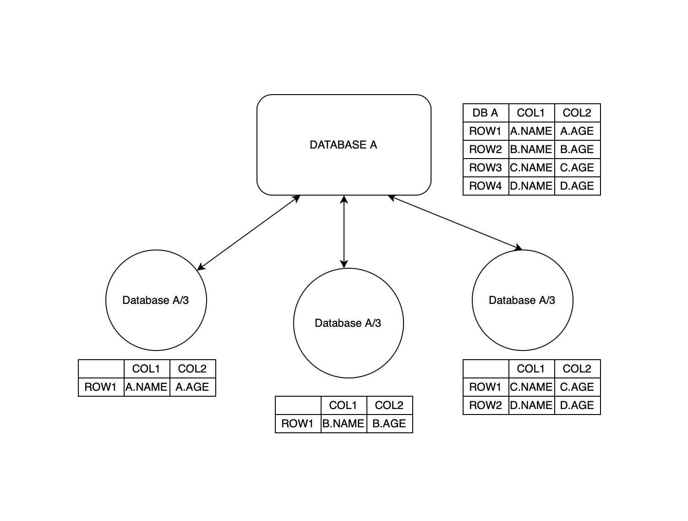
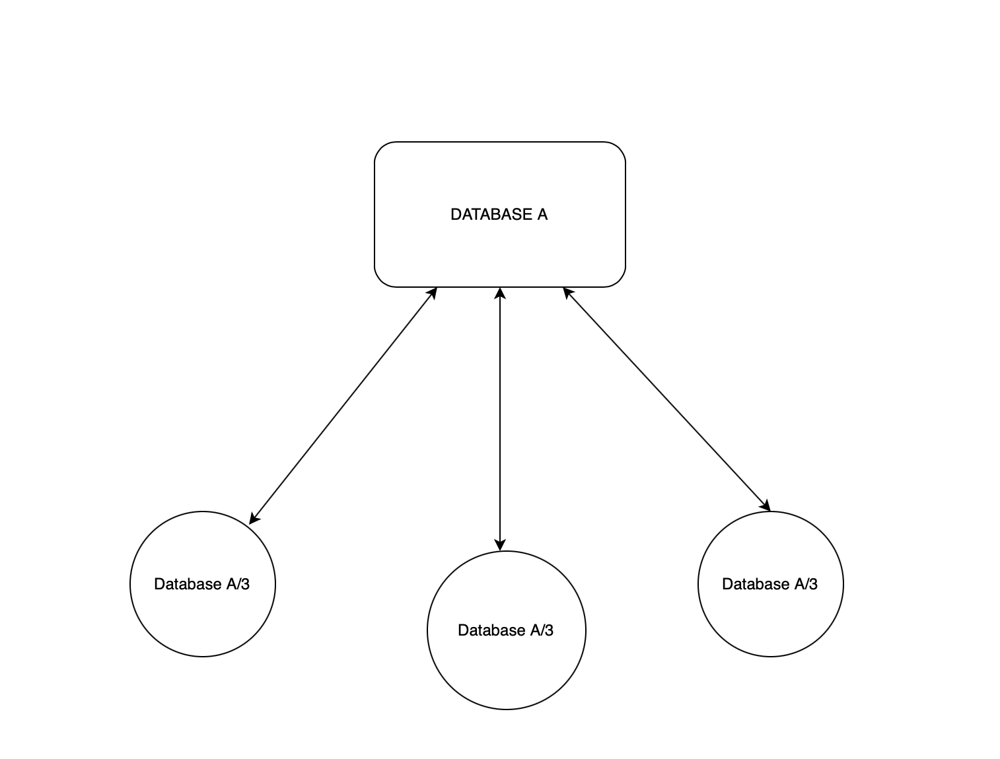

What is The Multi-Cloud Database?
It is a Distributed Database on a Cloud Network
Is it really different from a regular cloud hosted database ?
Yes it is ! Due to the way the databases are set up we guarentee a mathematically proven faster processing time compared to traditional SQL databases.
How do you guarentee a faster processing time ?
This information is patent pending which makes it impossible to divulge the recipe ! But if you can understand the diagrams it wont be that hard to figure it out !
Is there atleast a smidgen of information to confirm that this technology is real or whether it can be implemented ?
What we can reveal for now is that the higher the number of clouds you use the speed is higher and also we have implementations and prototypes.
Does a small scale business really need this technology ?
Absolutely not! This technology is specifically catered to companies with millions of data queries.
What are some benefits of using the Multi-cloud DB ?
Automated table creation systems with REGEX and faster data searching algorithms.
Whats inside the package ?
Client API Endpoints and A Cloud cluster dedicated just for you !